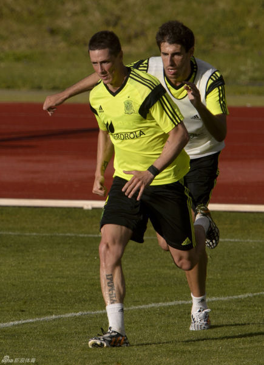

为什么满眼都是巴萨的替补啊？这是西班牙首发？@新浪体育:【西班牙疑似演练首发11人:T9单前锋】西班牙首发11人在巴西的第二练中显露端倪。皮克顶替此前友谊赛中出场的马丁内斯，与拉莫斯组成搭档，托雷斯则取代迭戈-科斯塔担任单前锋。其余的首发队员还有：边后卫阿兹皮利奎塔和阿尔巴，中场球员哈维、布斯克茨、席尔瓦、小法和佩德罗。西班牙训练疑似演练首发11人 小法中场托雷斯单前锋 
西方极右翼的文章竟然在微博的中国人内转开。动辄给一个主要宗教的教徒扣帽子。大家仔细动脑子想一想，将心比心。如果西方白人说，华人就是代表脏乱差，世界各地的唐人街几乎都和脏乱差黑帮枪杀贩毒偷渡联系在一起，还抱团在一起别人插不进。我们怎么想？这些都是教育和经济的问题，与种族和宗教无关 /@时尚时事品牌-张辛可:【在欧洲两年，谈谈穆斯林给我的感受】这是一篇很早的文章。心里堵得慌，拿来公示一下。想到一句曾经有人说过的话：人性中恶的一面一旦被激活，就像潘多拉盒子被打开，一发不可收拾。在某些情况下，会显得愈发野蛮、落后、愚昧。一些观念、想法和行为都极其挑战人类的想象力。via@如鱼得水似草涵
 西班牙训练疑似演练首发11人 小法中场托雷斯单前锋
西班牙训练疑似演练首发11人 小法中场托雷斯单前锋